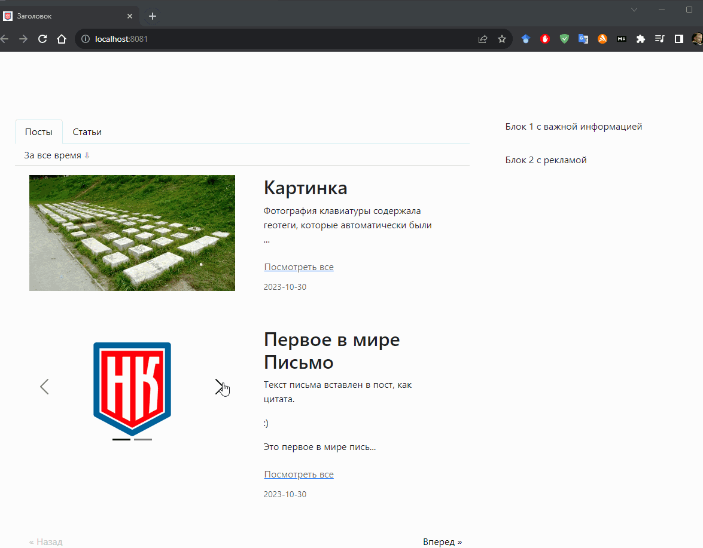
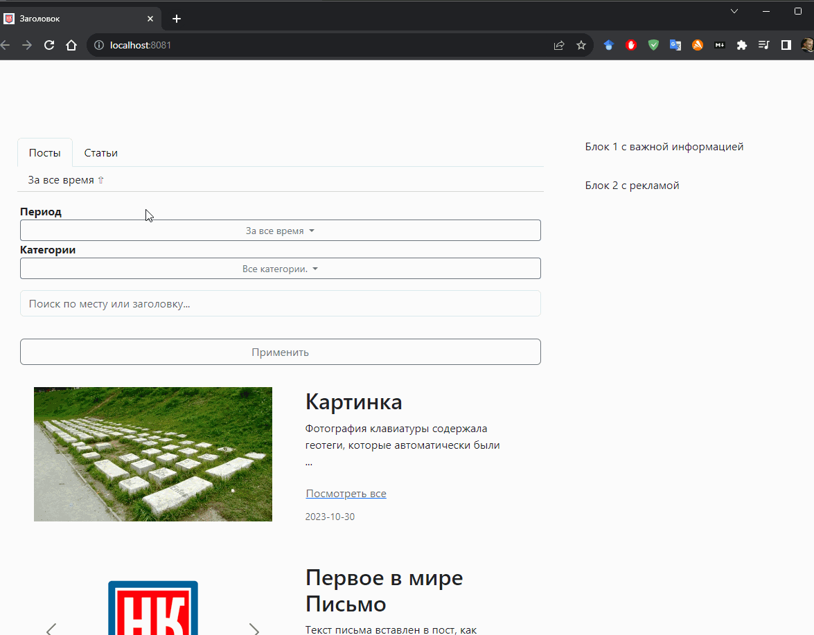

Опубликованные посты
Публикация постов
Все опубликованные посты становятся публично доступными в витрине постов.

Просмотр постов
На одну страницу помещается не более 25 постов.
Внизу страницы имеются кнопки вперед и назад для перелистывания страниц.
Каждый опубликованный пост имеет две формы отображения: краткую и полную.
В краткой форме пост представлен в виде карточки состоящей из двух частей: левой и правой.
Слева располагается медиа контент из поста. Если в посте сразу несколько фотографий,
то в левой части появляются стрелки прокрутки контента.
Справа расположен текст поста, без медиа контента. Если текст очень длинный,
то отображается лишь небольшая часть текста, а полное содержимое доступно
в полной форме поста по ссылке по Посмотреть все.
В полной форме поста текст и медиа контент в нем расположен в том виде, как его редактировал автор.

Поиск среди опубликованных постов
Параметры поиска:
- Период публикации - За сегодня, за вчера, за неделю, за месяц, за все время (по умолчанию)
- По категориям - По умолчанию в фильтре отмечены все категории постов, но пользователь может самостоятельно отметить наиболее интересующие его категории.
- По заголовку или месту (геометки) - Если к посту указана геометка, то можно выполнить поиск по локации (название города, региона, название улицы).

На анимации выше можно видеть как в разделе фильтра в поле ввода текста вводится город Екатеринбург.
Так как Пост с картинкой был создан из письма с геометкой, то он (пост) унаследовал эту геометку.
Теперь пост можно найти по названию города или улицы.